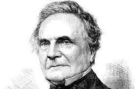

Charles Babbage (Teignmouth, Devonshire, Gran Bretaña, 26 de diciembre de 1791-Londres, 18 de octubre de 1871) fue un matemático y científico de la computación británico.1 Diseñó y desarrolló una calculadora mecánica capaz de calcular tablas de funciones numéricas por el método de diferencias. También diseñó, pero nunca construyó, la analítica para ejecutar programas de tabulación o computación; por estos inventos se le considera como una de las primeras personas en concebir la idea de lo que hoy llamaríamos una computadora, por lo que se le considera como "El Padre de la computación". En el Museo de Ciencias de Londres se exhiben partes de sus mecanismos inconclusos. Parte de su cerebro conservado en formol se exhibe en el Royal College of Surgeons of England. Sitio en Londres.
Hay un debate sobre la fecha y lugar de nacimiento de Babbage. En primer lugar, según Dictionary of National Biography seguramente nació en el número 44 de Crosby Row, Walworth en Londres, Inglaterra.3 En relación a su fecha de nacimiento, The Times publicó que Babbage nació el 26 de diciembre de 1792 pero un sobrino suyo afirmó que fue un año antes, 1791. El registro de la parroquia St. Mary's en Newington establece que Babbage fue bautizado el 6 de enero de 1792, lo cual puede confirmar que hubiese nacido un año antes.
Babbage fue el cuarto hijo de Betsy Plumleigh Teape y Benjamin Babbage (Socio banquero del empresario William Praed en fundar Praed9s & Co.)
Cuando Babbage tenía 8 años fue enviado a una escuela de día en Alpington para recuperarse de una peligrosa fiebre. Durante un tiempo pudo atender a la escuela de Enrique VI en Totnes, pero su salud le obligó a seguir recibiendo clase de los tutores privados durante un tiempo.
Fue después de esto cuando Babbage comenzó a acudir a una Academia en Enfield (Londres), donde las clases se impartían por el reverendo Stephen Freeman. La biblioteca de esta academia incentivó la pasión de Babbage por las matemáticas. Antes de dejar esta academia estudió en dos escuelas privadas, la primera se impartía por un clérigo cerca de Cambridge, a través de la cual conoció al evangélico inglés Charles Simeon, pero no eran tutorías lo que Charles necesitaba. La segunda escuela era un tutor de Oxford, gracias al cual Babbage adquirió el nivel suficiente para ser admitido en Cambridge.9 Fue entonces cuando le trajeron de vuelta a casa para estudiar en una escuela a la edad de 16 o 17.
En octubre de 1810 Babbage llegó a Trinity College (Cambridge), habiéndose formado de forma autodidacta en matemáticas contemporáneas 11 (A partir de las lecturas de Robert Woodhouse, Joseph-Louis Lagrange y Maria Gaetana Agnesi). Consecuentemente se llevó una gran decepción con la forma de impartir las matemáticas de la universidad.
En 1812, junto con John Herschel, George Peacock y otros amigos, formaron la Analytical Society [1] Paralelamente Babbage era miembro de otras asociaciones como The Ghost Club, asociación de investigación de fenómenos paranormales y The Extractors Club , centrado en la liberación de los miembros del manicomio, en caso de que alguna vez sucediese.
En ese mismo año Babbage fue enviado a Peterhouse, Cambridge, donde se encontraba en la élite de las matemáticas pero no se graduó con notas elevadas sino que recibió en cambio el título sin tener que examinarse en 1814. Defendió una tesis que se consideró "blasfemia" en la disputa pública, no obstante no se sabe si esto estuvo relacionado con el hecho de no llevar a cabo un examen.
Dada su reputación Babbage consiguió progresar rápidamente. Impartió clases de astronomía en el Royal Institution en 1815 y fue elegido Miembro de la Royal Society en 1816. 14 Sin embargo, al presentarse a las oposiciones tras su graduación no fue aceptado. En 1816 fue candidato para ser profesor en Haileybury College, con cartas de recomendación de James Ivory y John Playfair, pero fue Henry Walter Bates el que se llevó el puesto. 15 Junto con Herschel visitaron Paris y la Sociedad de Arcueil en 1819, conociendo en este viaje a los principales matemáticos y físicos franceses. 16 Ese mismo año aplicó a la Universidad de Edimburgo recomendado por Pierre-Simon Laplace, perdiendo de nuevo el puesto por William Wallace, matemático y astrónomo escocés.